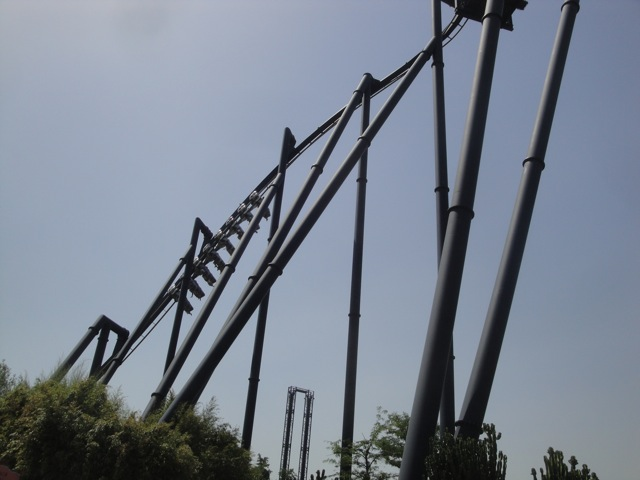
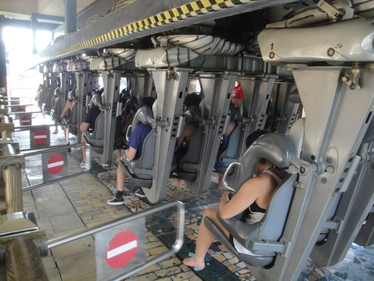
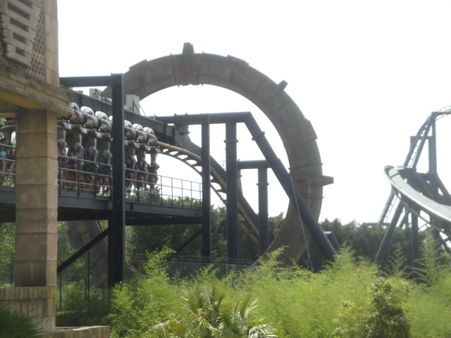
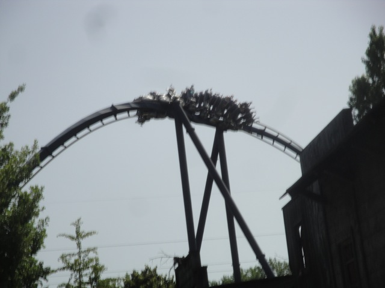
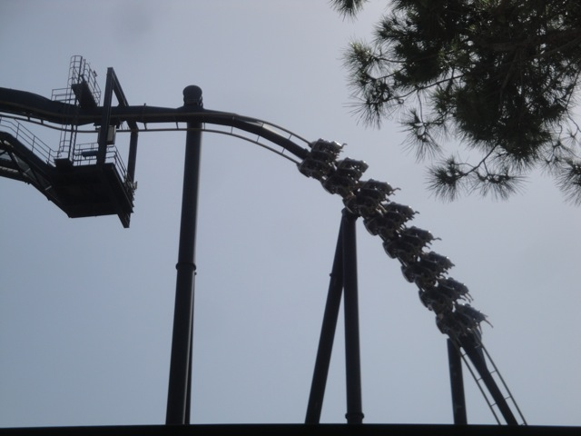
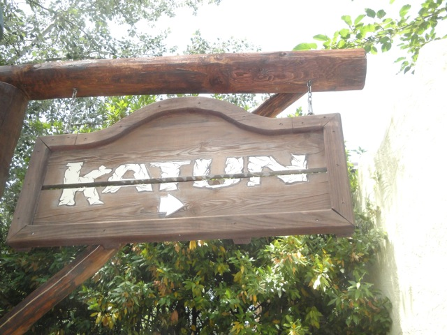

| |
Katun Review

We're here at Mirabilandia to ride Katun. After pulling down the shoulder harness, the floor drops and away we go. We head around your typical dip and head through a Stargate and up the lifthill. I think this is supposed to simulate us traveling back in time to the time of the ancient Mayans. It didn't work, but whatever. This ride is still awesome. The view isn't exactly that nice. But considering how this is one of the best B&M Inverts of all time, it's not a big deal. I mean after all, we've certainly got a climb to the top. Eventually, we make it, go down the pre-drop and drop. Now the first drop on Katun is certainly different compared to on other Inverted Coasters. Here, it starts out as a twisting drop, twisting to the left as we drop, but then, we just stop twisting, the drop actually gets steeper, and we just plummet to the ground as if it were a straight drop, pouring on the speed and giving us a nice little pop of airtime that is both unexpected and that I crave oh so much. We then soar up into a vertical loop. And I have to admit, this loop is HUGE!!! And yet, we still get some nice positive Gs from it. We then rise up into a Heartline Twist. And again, its really big. But that doesn't stop us from getting some nice whip as we roar through it and drop back down towards the ground. This ride just doesn't slow down. After the drop from the inline twist, it just heads into a sharp turn to the right, which not only gives us some nice laterals, but just lets us soak in our speed. Ooh, that feels so good. We then rise up into a cobra roll. This one is a little smaller than the loop and heartline spin, so we really get some good snapping action as we exit out the first half and flip in the second half to soar back to the ground and get more of that good positive Gs. And we get even more of those as we helix up into the midcourse brakes, providing us with more strong Positive Gs. The mid course brakes are barely on, acting more like a trim than an effort to really slow us down. We then drop back down to the ground and whip ourselves through a corkscrew. And it feels good. We then go through this trench below ground that sort of turns into this tunnel. Sadly, it's too short for us to shout "TAKE THE TUNNEL!!!". But in more good news, we get to go through another corkscrew and its a strong one. We then dip down and go through a low to the ground helix where you might actually be able to touch plants, but you're probably too distracted by those crazy postive Gs. We then go back through a stargate (Seriously. I like the theme and all, but it is unnecessary) and into the brake run. All you can say afterwards is "Damn. Now THIS is how a B&M should run." And sadly, most of the B&Ms in this world are not on the same level as Katun. But the good news is that this just makes Katun more special as one of the B&M Greats. Definetly make sure it out when you visit Mirabilandia.
9/10
Location: Mirabilandia
Opened: 2000
Built by: B&M
Last Ridden: June 20, 2012
Katun Photos





Home
|